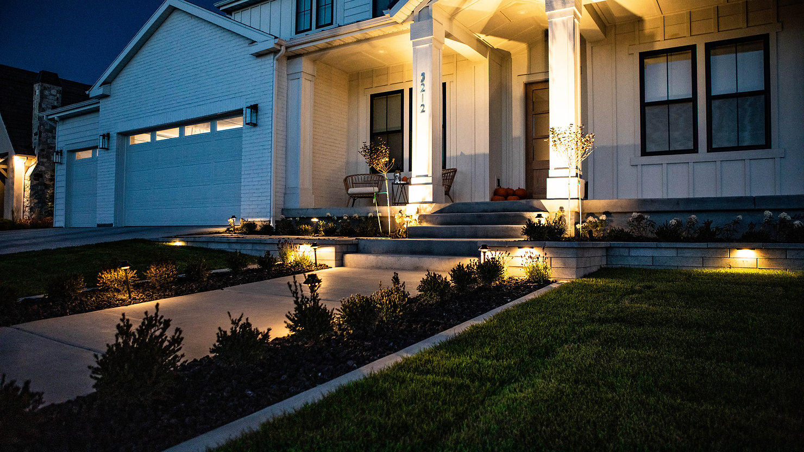

Can Landscaping Improve Energy Efficiency For My Home Or Business?

Yes, landscaping can boost energy efficiency for your home or business by offering shade, minimizing heat absorption, and serving as natural insulation, which reduces energy consumption for cooling and heating. In today's world, energy efficiency is a key concern for homeowners and business owners alike. With rising energy costs and growing environmental awareness, finding ways to reduce energy consumption has never been more important. One often-overlooked method is through strategic landscaping. Yes, you heard that right—landscaping can significantly impact the energy efficiency of your home or business.
At Ironhills Landscaping, we're passionate about helping you achieve not just a beautiful outdoor space, but one that saves you money and benefits the environment. Let’s dive into how landscaping can improve energy efficiency.
Key Takeaways
Energy Efficiency Through Landscaping: Strategic landscaping can significantly reduce heating and cooling costs by providing natural shade, windbreaks, and insulation.
Cost Savings: Implementing energy-efficient landscaping can lead to energy savings of 15-25%, making it a cost-effective investment in the long run.
Environmental Benefits: Energy-efficient landscapes reduce carbon footprints, improve air quality, and manage stormwater runoff, benefiting the environment.
Aesthetic Appeal: Thoughtfully designed landscapes enhance property aesthetics and can increase property values.
Key Components: Effective energy-efficient landscaping involves strategic tree placement, the use of shrubs and bushes, and ground cover plants to regulate temperatures and provide insulation.
Water Efficiency: Utilizing drought-resistant plants and efficient irrigation systems can conserve water and reduce costs.
Proper Maintenance: Regular maintenance, including pruning and plant health monitoring, is essential to maintain the benefits of an energy-efficient landscape.
Commercial Benefits: Businesses can also benefit from energy-efficient landscaping by reducing operational costs and attracting eco-conscious customers.
Challenges: Initial investments and planning complexities are considerations, but the long-term benefits often outweigh these challenges.
Professional Expertise: Consulting with professionals like Ironhills Landscaping ensures a well-designed and successful energy-efficient landscape.
What is Energy-Efficient Landscaping?
Energy-efficient landscaping involves designing and maintaining your outdoor spaces in ways that help reduce energy consumption. Unlike traditional landscaping, which focuses primarily on aesthetics, energy-efficient landscaping strategically uses plants, trees, and other elements to create natural insulation, shade, and windbreaks. This approach not only enhances the beauty of your property but also contributes to lower energy bills and a smaller carbon footprint.
The Benefits of Energy-Efficient Landscaping
Cost Savings
By strategically planting trees and shrubs, you can reduce your heating and cooling costs. Shade trees can lower the temperature around your home, decreasing the need for air conditioning. Windbreaks can reduce heating costs by blocking cold winds.
Environmental Impact
Energy-efficient landscaping reduces your carbon footprint. Plants absorb CO2, improving air quality, and well-designed landscapes can manage stormwater runoff, reducing soil erosion and water pollution.
Aesthetic Appeal
A thoughtfully designed landscape not only improves energy efficiency but also enhances the curb appeal of your property. Beautiful, sustainable landscapes can increase property values and create inviting outdoor spaces.
Key Components of Energy-Efficient Landscaping
Strategic Tree Placement
Trees are one of the most effective tools in energy-efficient landscaping. Placing deciduous trees on the south and west sides of a building can provide shade during the summer while allowing sunlight to warm your home in the winter.
Shrubs and Bushes
These plants can act as natural insulators. Planted close to your home, they can help reduce the wind's cooling effect on your house's walls, leading to lower heating costs.
Ground Cover Plants
Ground cover plants help to regulate soil temperature, reduce heat islands, and prevent soil erosion. They can also improve water retention in the soil, which is beneficial during dry periods.
How Trees Can Reduce Energy Costs
Shade and Cooling
Trees provide natural shade, which can lower the surrounding air temperature by up to 9°F (5°C). This cooling effect reduces the need for air conditioning in the summer months.
Windbreaks and Insulation
Evergreen trees and shrubs can act as windbreaks, reducing the wind chill near your home. This natural barrier can lower heating costs by up to 25%, making your home more comfortable in the winter.
The Role of Shrubs and Bushes
Insulation Properties
Shrubs planted near your home can create a buffer zone that reduces heat loss. This natural insulation helps maintain a more stable indoor temperature, cutting down on heating and cooling expenses.
Protection Against Wind
Bushes and shrubs can block and redirect cold winds away from your home, reducing the strain on your heating system. This protection is particularly valuable in areas with harsh winters.
Ground Cover Plants and Their Benefits
Soil Temperature Regulation
Ground cover plants like ivy or creeping thyme help to stabilize soil temperatures, keeping the ground cooler in summer and warmer in winter. This can indirectly reduce the energy needed to maintain a comfortable indoor climate.
Reduction of Heat Islands
Heat islands occur when areas, especially urban ones, absorb and retain heat. Ground cover plants can mitigate this effect by providing a cooler ground surface, which helps lower overall temperatures.
Water Efficiency in Landscaping
Use of Drought-Resistant Plants
Choosing plants that require less water can lead to significant savings on water bills and reduce the strain on local water supplies. These plants are often native species adapted to local climate conditions.
Efficient Irrigation Systems
Modern irrigation systems, such as drip irrigation or smart sprinklers, can deliver water directly to the roots of plants, minimizing waste. This ensures that plants receive the right amount of water without over-irrigation.
The Importance of Proper Maintenance
Regular Care for Optimal Performance
To ensure your energy-efficient landscape continues to perform well, regular maintenance is essential. This includes watering, weeding, mulching, and monitoring plant health.
Pruning and Plant Health
Proper pruning helps maintain the health and effectiveness of your plants. Removing dead or diseased branches ensures that trees and shrubs continue to provide maximum benefits, such as shade and wind protection.
Landscape Design Principles for Energy Efficiency
Integrating Hardscapes
Incorporating hardscapes like patios, walkways, and retaining walls can complement your plants and contribute to energy efficiency. For example, using reflective surfaces can reduce the heat absorbed by your home.
Using Reflective Surfaces
Reflective surfaces, such as light-colored paving stones or gravel, can help reduce heat buildup around your home. This can lower the ambient temperature and reduce cooling costs.
Energy-Efficient Landscaping for Businesses
Benefits for Commercial Properties
Businesses can also benefit from energy-efficient landscaping. A well-designed landscape can reduce energy costs, enhance employee well-being, and attract eco-conscious customers.
Attracting Eco-Conscious Customers
Sustainable landscaping practices demonstrate a commitment to the environment, which can be a selling point for customers who value green initiatives. It can enhance your company's reputation and attract more business.
Why Choose Ironhills Landscaping?
At Ironhills Landscaping, we combine expertise with a passion for creating beautiful and sustainable outdoor spaces. Our team of designers, builders, and dreamers is committed to bringing your vision to life. From the first sketch to the final installation, we're with you every step of the way, ensuring your landscape reflects your personality and exceeds your expectations. Choose us for your energy-efficient landscaping needs and experience the Ironhills difference.
FAQs
Can landscaping really make a significant difference in energy efficiency?
Yes, strategic landscaping can reduce heating and cooling costs by providing shade, windbreaks, and natural insulation.
How much can I save on energy bills with energy-efficient landscaping?
Savings can vary, but many homeowners and businesses see reductions of 15-25% in their energy costs.
What types of plants are best for energy-efficient landscaping?
Deciduous trees, evergreen shrubs, and drought-resistant plants are excellent choices for energy-efficient landscaping.
Is energy-efficient landscaping expensive to implement?
While the initial costs may be higher, the long-term savings on energy and water bills make it a cost-effective investment.
How do I get started with energy-efficient landscaping?
Contact a professional landscaping company like Ironhills Landscaping to help you design and install a landscape that meets your energy efficiency goals.
Enhance Your Energy Efficiency with Ironhills Landscaping
Energy-efficient landscaping is a powerful tool for reducing energy costs and benefiting the environment. By strategically placing trees, shrubs, and ground cover plants, you can create a beautiful and sustainable outdoor space. At Ironhills Landscaping, we're dedicated to helping you achieve these goals. Contact us today to start your journey towards a more energy-efficient and aesthetically pleasing landscape.
Take Action Now: Transform Your Space with Ironhills Landscaping
Ready to transform your outdoor space into an energy-efficient haven? Contact Ironhills Landscaping today! Our team of experts is here to help you design and install a landscape that not only looks stunning but also saves you money and supports the environment. Let’s work together to make your vision a reality. Contact us now and start saving on energy costs with a beautifully designed landscape.
Recent Posts


If you live in Lehi, there's a good chance your yard isn't perfectly flat. Newer neighborhoods near Traverse Mountain, homes along the foothills, and lots that step down toward the street all share th